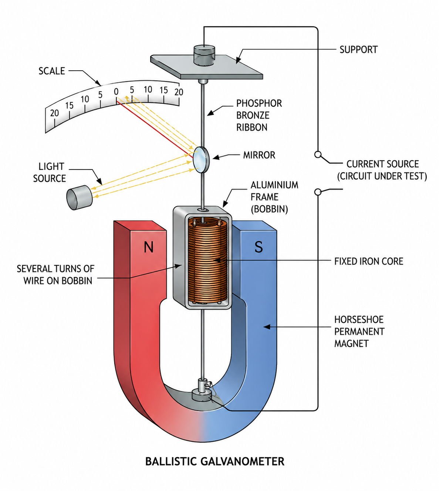

Simulation
Graph
Diagram

Ballistic galvanometer circuit used to measure the first angular throw.
Calculation
Formula
Formula
Observation
Observation
Ready. Select Release to start the gravity-driven oscillation.
Ballistic first-throw observations
| Trial no. |
Resistance in ohms |
Left | Right | Mean corrected throw in cm |
|||||
|---|---|---|---|---|---|---|---|---|---|
| Mean | Mean | ||||||||
| Connect the circuit, raise the HMS coil, then release it to record a first throw. | |||||||||
Manual observation record
| Reading | Spot (cm) | ||
|---|---|---|---|
| No manual readings added. | |||
Results
Angle 22.0°
Velocity 0.000 rad/s
Flux 0.000 mWb
EMF +0.000 V
Delivered charge 0.000 C
Induced current 0.000 mA
Oscillations 0
Motion Stationary
Electrical energy dissipated
0.000 mJ